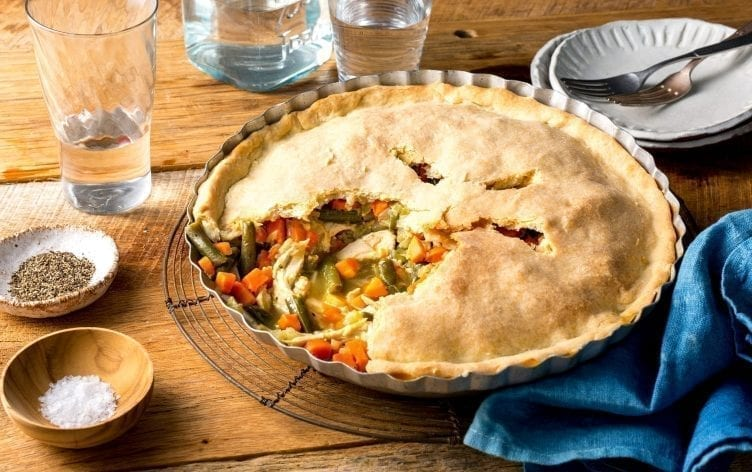

Chicken Pot Pie

Warm, savory and flaky, the chicken pot pie is a king of comfort foods.
Ingredients
For the pastry crust:
- 3/4 cup (95g) all-purpose flour
- 1/4 cup (30g) whole-wheat or all-purpose flour
- 1/8 teaspoon salt
- 4 tablespoons cold butter, cut into pieces
- 3 tablespoons cold water
For the filling:
- 2 teaspoons olvie oil
- 1 medium (110g) onion, chopped
- 2 garlic cloves, minced
- 2 small stalks celery (80g total), chopped
- 1 cup (115g) green beans
- 1/4 cup (30g) all-purpose flour
- 1 cup (240ml) low-sodium chicken broth
- 1 cup (240ml) 1% milk
- 1 teaspoon poultry seasoning
- 1/2 teaspoon salt
- 1/2 teaspoon pepper
- 3 cups (450g) chopped or shredded cooked chicken breast
Cooking Steps
- Prepare pastry crust ahead of time: In a large bowl, combine flours and salt; cut in butter with a pastry blender or fork until crumbly. Add water; stir until dough comes together. (You can also combine flours in a food processor. Add butter, and pulse until mixture resembles a coarse meal. Add water, and pulse until dough comes together.) Form dough into a ball; flatten into a disk. Wrap, and chill at least 1 hour or until ready to prepare pie.
- Preheat oven to 375°F (190°C). Remove pastry crust from refrigerator, and let soften slightly while preparing filling.
- Heat oil in a large saucepan over medium heat. Add onion, garlic, celery, carrots and green beans, then cook 3 minutes or until tender.
- Sprinkle flour over vegetables and cook, stirring constantly, for 1 minute. Add broth, milk, poultry seasoning, salt and pepper, stirring until well blended. Cook 5 minutes or until thickened and bubbly. Stir in chicken, green beans, salt and pepper. Spoon mixture into a 9-inch pie dish.
- Roll pastry between two sheets of plastic wrap into a 9 1/2-inch circle. Lay crust on top of chicken mixture. Fold excess crust along edges, pressing down with a fork on edges to seal. Cut vents in top of crust.
- Place pie on a baking sheet, and put in oven; bake 30 to 35 minutes or until golden brown and bubbly. Let stand 5 minutes before serving.